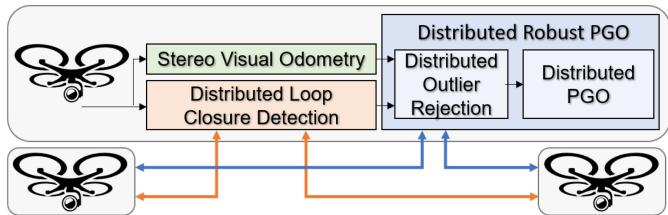
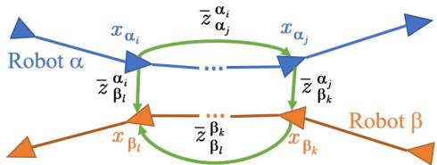

本节目标
读完你应该能：说清单机假回环和多机假回环后果的区别；讲清 MultiUAV 的中心化架构与代价；用自己的话解释 PCM（成对一致测量集最大化）在算什么；记住整块课会沿「中心化→分布式→去中心化」三档推进。
和前面课程怎么接
★ 直接接 第七季 0140「回环假阳性铁律」：那一节立下铁律「单机一次假回环会毁掉一张图」；本块是这条铁律最残酷的战场——多机一次假回环会把两台机器人的地图一起缝歪。★ 鲁棒后端全是在位姿图上加约束，要回链第二季 0018 / 0019 的 Schur 消元与位姿图优化，理解「一条边错了会怎样」。★ 本块后面大量用激光描述子（Scan Context 等），那是第四季 0092 / 0093 与第七季 0135 的地盘。
1. 先说人话：多机到底难在哪
咱们把 SLAM 想成「一边走、一边画地图」。单机的时候，你只有一份地图要操心。多机协同，听起来是「人多力量大」——每台机器人各画各的，最后拼成一张大图，又快又全。但拼图有个致命前提：你怎么知道「我画的这个路口」和「你画的那个路口」是同一个地方？
这个「认出是同一个地方」的动作，在 SLAM 里叫回环（loop closure）。一旦认错（假回环 / 假阳性），单机只是把自己的那张图拉歪；多机却是拿一根错误的针，把两台机器人的两张图缝在一起，结果两张图同时被扯变形。这就是本块全部鲁棒后端（PCM / GNC / ADMM）要解决的问题，也是 0140 铁律最残酷的战场。
怎么看这张图：① 盯住红色虚线：它本不该存在；② 看两条红色弯曲箭头：优化器为了「满足这条假边」，会把 A 的轨迹往 B 那边拽、B 的轨迹也往 A 那边拽；③ 结果两台机器人的地图都被扭曲，而不是只有一台。
要记住的一句话：多机一次假回环的代价，是「一针缝歪两张图」，这正是 0140 铁律最残酷的版本。
2. 论文一：MultiUAV-SLAM（2017）——第一个能跑的中心化系统
ETH Zürich 的 Schmuck & Chli 在 2017 年（IROS）把单目协作 SLAM 做成了「中心化服务器 + 多个轻量 agent」的可扩展系统，后来这套血脉一路走到 COVINS。它的核心思想今天看很朴素：
- 每台无人机（agent）本地跑 ORB-SLAM2 的前端里程计，只保留一小块地图（限容 N 个关键帧）；
- 地面服务器（server）负责三件「重活」：地点识别（place recognition）、地图融合（map fusion）、全局 BA；
- 通信只传关键帧（KeyFrame）和地图点，不传原始图像——这就是它省带宽的根本。
融合时它用 Sim(3)（7 自由度的相似变换）而不是普通的 SE(3)，因为单目 SLAM 每张图自带一个不确定的尺度，Sim(3) 能同时把「旋转、平移、尺度」三件事对齐。4 架无人机户外实验里，它做到 ATE 0.22 m，通信在 4 台时约 3.37 s / 周期。
但有个关键短板：它没有显式的鲁棒后端。它靠 BA + Sim(3) 的几何一致性、靠 BoW（词袋）投票 + 几何验证来挡假回环，没有 PCM / GNC 这类「outlier rejection」。这是早期系统的通病——对假回环的鲁棒性弱。本块后面所有鲁棒后端，都是来补这个洞的。

怎么看这张图：两张轨迹（蓝、黑）是两台无人机各自的估计；红色地图点是「被两台无人机共同用来定位」的点——也就是成功建立机间关联的地方。注意这是「协作成功」的样子，本节要担心的反面是：一旦这类关联认错，两条轨迹会同时被拉歪。

怎么看这张图：典型「星型」中心化拓扑——agent 在左边各自跑 VO、维护本地小地图；server 在右边集中做地点识别、地图融合、BA。所有通信都走 agent↔server 这一条线，这就是后面要说到的「带宽瓶颈与单点故障」的种子。
3. 论文二：DOOR-SLAM（2020）——把「拒假回环」做成系统
三年后的 DOOR-SLAM（Lajoie、Ramtoula、Chang、Carlone、Beltrame，IEEE RA-L 2020）换了思路：它不要中心服务器，做成完全分布式 peer-to-peer——机器人相遇（rendezvous）才交换信息，不要求全连通，理论上能跑几千台。它最大的贡献，是第一次把PCM（Pairwise Consistent Measurement set Maximization，成对一致测量集最大化）当成后端的核心来用。
DOOR-SLAM 的前端不传原始图像：它用 NetVLAD 描述子（128 维，约 1 kB / 帧）做机间回环检索，再用 solvePnP + RANSAC 做几何验证。比传原始图像省约 10×。后端用分布式 PCM 拒假回环，再做分布式 PGO（Choudhary 的 DGS）。

怎么看这张图：对比 MultiUAV 的星型，这里是「mesh（网状）无主」结构：每个机器人既跑本地前端，又和邻居交换回环候选、做分布式 PCM 与分布式 PGO。没有中心节点 = 没有单点故障，但也意味着「拒假回环」不能再靠一台服务器集中算，而要分布式地完成——这正是 PCM 被选中的原因。

怎么看这张图：这是 PCM 判据的几何来源——要确认「机器人 α 到 β 之间的一条机间回环」是否可信，得把它和「各自里程计攒出来的闭合回路」比一比。若两者凑成的环闭合不上（残差大），这条回环就可疑。下一节的公式就是把这个几何直觉写成数学。
4. PCM 在算什么：把「互相矛盾」的回环剔除
DOOR-SLAM 的 PCM 判据长这样（两机 α、β 之间两条回环，和它们各自的里程计凑成一个环）：
这句话在说什么：① 这个式子在算「如果我相信这四条测量同时成立，它们能不能闭合成一个没有缝隙的环」；② 为什么这样就能判对——里程计是各自一步一步走出来的、相对可信，若一条机间回环和里程计凑出的环「对不上」（残差大），那这条回环多半是假的；③ 权重 / 阈值 γ 由卡方分位定（实验用 1% 阈值），γ 卡得越严，越敢扔掉可疑回环，但也越容易误杀真回环（低 recall）。
怎么看这张图：① 每张绿框卡片代表「和大多数候选不冲突」的可信回环；② 红叉卡片一旦加入，会让某个环闭不上，所以被排除；③ 绿色虚线椭圆圈出的就是「能同时成立的最大那一堆」——数学上叫最大团（max clique）。
要记住的一句话：PCM 追求「最大一致集」，代价是容易误杀真回环（低 recall），这正是后面 GNC 要修复的痛点。
互动判断
多机协同里，一次假回环（假阳性机间关联）最可能的后果是？
5. 架构演进主线：中心化 → 分布式 → 去中心化
本块 7 节课会沿一条清晰的主线推进，0168 先把这三档摆在桌面上，后面每篇各归其位：
- 中心化（centralized）：有中央服务器汇总所有地图并做全局 BA（MultiUAV → COVINS → LAMP 2.0）。简单可靠，但有单点故障 + 带宽瓶颈，且假定通信可达。
- 分布式（distributed）：每台机器人本地建图、本地优化，相遇时才交换（DiSCo / DCL / RDC）。把计算从服务器拆到各机，但仍靠 rendezvous。
- 完全分布式 / 去中心化（decentralized）：peer-to-peer、无主、容断（DOOR / Kimera-Multi / Swarm / D²）。最稳，但一致性更难保证。
怎么看这张图：① 左边所有线都连到中心，中心一挂全停；② 中间每台机自己算，只在碰面时通信；③ 右边没有中心，任意两点可通信，断网也能局部继续。
要记住的一句话：架构越往右越稳，但「保证全局一致」的担子就从服务器转移到鲁棒后端算法上。
6. 通信带宽光谱：本块反复出现的另一条线
多机协同还有一条和「拒假回环」同样重要的暗线：传什么才省带宽。越往右越省，本块会反复出现：
怎么看这张图：① 每个向下的箭头粗细代表「每帧要传多少」；② 左边原始图像约 900 kB / 帧，右边描述子只要几 kB；③ 本块所有系统都在往右挪——能传描述子就不传点云，能传拓扑就不传栅格。
要记住的一句话：多机协同的第一性原理之一：把「要传的东西」压到最轻，系统才能跑得动。
互动判断
PCM（一致集最大化）求解的目标，最接近下面哪种？